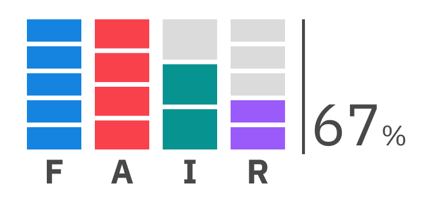
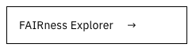
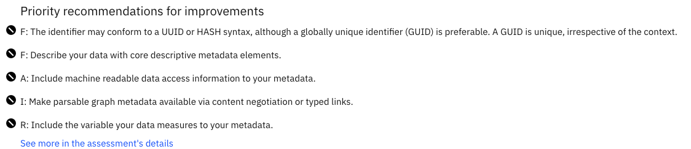
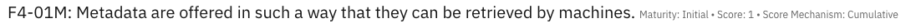
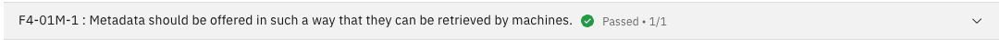
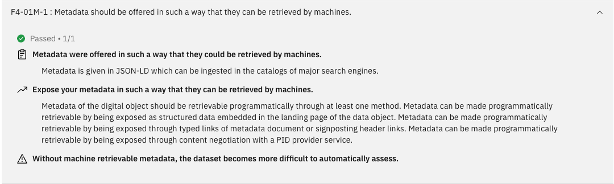
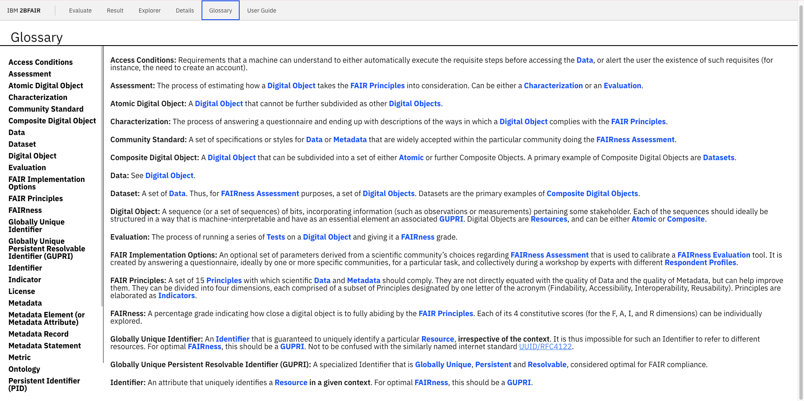
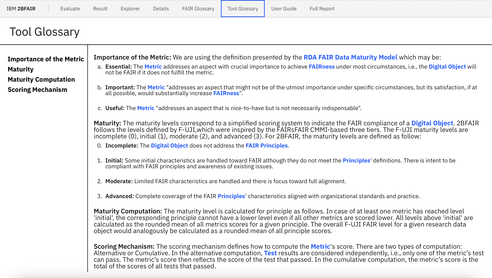

Each badge's column represents the
FAIRness evaluation result achieved by
the
digital object corresponding
to a FAIR dimension. The number on the right of the badge
represents the total score as a percentage achieved by the
digital object, i.e., it
considers all evaluated FAIR dimensions.

To learn more about your result, click the button
FAIRness Explorer
to navigate to the page Explorer.

Explorer
The page Explorer is composed of 4 elements:
Header: Presents information about the
evaluated object, a link to download the
evaluation result, and the
FAIRness badge.
Graph: Represents the score as a percentage
achieved for each dimension with boxes representing the result
achieved for each evaluated
metric within the dimension.
The graph presents, for each dimension, the
metrics used to evaluate the digital
object presented as a rectangle and the score as a percentage
achieved by the dimension
evaluation. Next to each
dimension, there is an arrow that, if clicked, opens the Details
page in the section corresponding to the dimension. Each rectangle
depicts:
Priority recommendations shows the most important recommendations
to follow to improve the
FAIRness level of the digital
object. If there are more than n priorities,
where n is defined in the 2BFAIR configuration, a
See more link is presented. When the user click
son this link, it opens the Details page in the dimension
corresponding to the first recommendation.

Details
The page Details is composed of two elements:
The same header as in the Explorer page.
An accordion with the
evaluation details, which
fields are explained as follows.
Score: A value between 0 and 1 representing
the average score achieved by all the
FAIRnesstests of the
metric.
Score Mechanism: Defined
here, in the
tool glossary.

For each test, the following are
presented:


Status: It can be passed,
failed or not executed. The
status is passed when the
digital object passes in
the testevaluation, and failed if
not. The status is not executed when the
test doesn't run because of
missing requirements.
Score: A value between 0 and the maximum
test score, which varies from
test to
test.
Sidebar: Allows to browse commonly used terms
in the FAIR concepts.
Definitions:Definitions of each term

Links are included in all terms present in the glossary that
appear on 2BFAIR's web pages so that the user can access the FAIR
Glossary by clicking on the word. Self-references are also
included to navigate through cross-terms in the glossary.
Tool Glossary
The page Tool Glossary is composed of:
Sidebar: Allows to browse commonly used terms
in the FAIR concepts.
Definitions:Definitions of each term

Links are included in all terms present in the glossary that
appear on 2BFAIR's web pages so that the user can access the FAIR
Glossary by clicking on the word. Self-references are also
included to navigate through cross-terms in the glossary.
Full Report
The Full Report page is a compilation of the
Result, Explorer and Details pages and is composed of five
elements:
Download ButtonAllows the user to download
the content of the page.